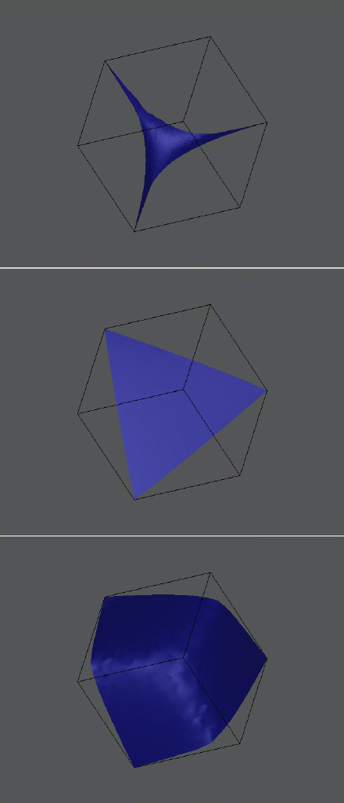

![[HOME]](lotka_files/home.gif) The Geometry Center Home Page
The Geometry Center Home Page
Using the Lotka-Volterra model, what happens to each species after a long time? Does one species beat out the others and become the only species left? Do the populations of the species remain constant? Mary Lou Zeeman, mathematics professor at the University of Texas, San Antonio and Drew LaMar, undergraduate at U.T. San Antonio, are looking at this question of long term behavior using dynamical systems theory. They recently visited the Geometry Center to use computer visualization to gain some intuition. Here is some of the theory of the Lotka-Volterra differential equations and a description of Zeeman and LaMar's visualizations with accompanying figures.
We look at the populations of n species as a point in n-dimensional space. The question of eventual behavior becomes a mathematical question; starting at a given point in n-dimensional space, what is the eventual behavior of the solution of the Lotka-Volterra differential equations? This is an n-dimensional system with n^2+n parameters. We wish to know how the dynamics change as the parameters vary.
By practical considerations, the origin must be fixed by the Lotka-Volterra flow, since zero population can never result in any positive population; we restrict attention to the positive cone in n-space. When species are strictly competitive, then work of M.W. Hirsch shows that other than the origin, every orbit is asymptotic to an invariant set called the carrying simplex. This carrying simplex is a hypersurface homeomorphic to the standard unit simplex in n-space via radial projection. Thus, since the carrying simplex is globally attracting, understanding the dynamics on it will show the eventual behavior of every initial point.
There is at most one fixed point with all coordinates positive. Call this fixed point P. It lies on the carrying simplex. In some cases it is known that there are no other recurrences except on the axes. Mary Lou Zeeman and Christopher Zeeman have proved that any time that the carrying simplex is convex or weakly convex (i.e. the carrying simplex lies all to one side of it's the tangent plane at the fixed point), there can be no periodic orbits, and the fixed point P is the only recurrence off of the axes. In this case, if P is an unstable fixed point, then ecologically, one species eventually dominates.
In some non-convex cases, it is known that there is a periodic orbit on the carrying simplex. For example, M.L. Zeeman has proved that for certain paths in parameter space, there is a Hopf bifurcation from the fixed point P.
Zeeman and LaMar are investigating the transition from no periodic orbit to a periodic orbit through a Hopf bifurcation. What happens to the shape of the carrying simplex at the bifurcation? Does the Hopf bifurcation occur immediately as the carrying simplex loses convexity, or does the loss of convexity precede the periodic orbit? To gain intuition, they have come up with a method for computing the carrying simplex. They are animating the carrying simplex through a Hopf bifurcation. Here are a series of pictures of the carrying simplex for the three species case.
This figure shows the carrying simplex as the periodic point goes through the Hopf bifurcation. Note that in the top picture, the carrying simplex is concave, in the middle picture, the carrying simplex is equal to the unit simplex, in the bottom picture, the simplex is convex, and thus there are no periodic orbits.

Through a combination of dynamical systems theory and computer visualization, Zeeman and LaMar are gaining intuition for the dynamics of solutions to the Lotka-Volterra equations. Though the equations are still very simplistic, understanding them gives insight into what happens in a more complex situation.
This article is based on Zeeman's talk in the University of Minnesota Dynamics and Mechanics Seminar on February 23, 1995, as well as an additional interview with Zeeman and LaMar. Thank you to them for their time taken for the interview, as well as preparing the figures for this article.
The Geometry Center Home Page
Comments to:
sander@geom.umn.edu
Created: May 2 1995 ---
Last modified: Jun 18 1996